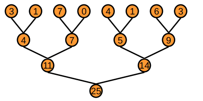
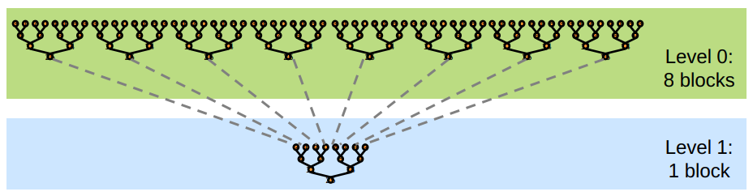
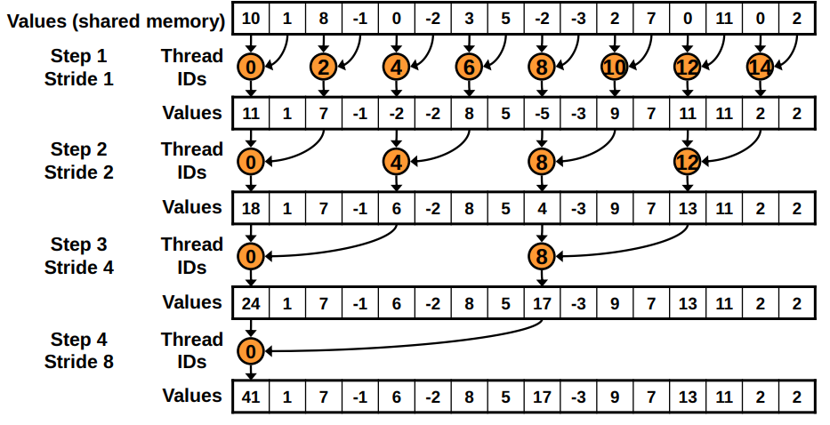
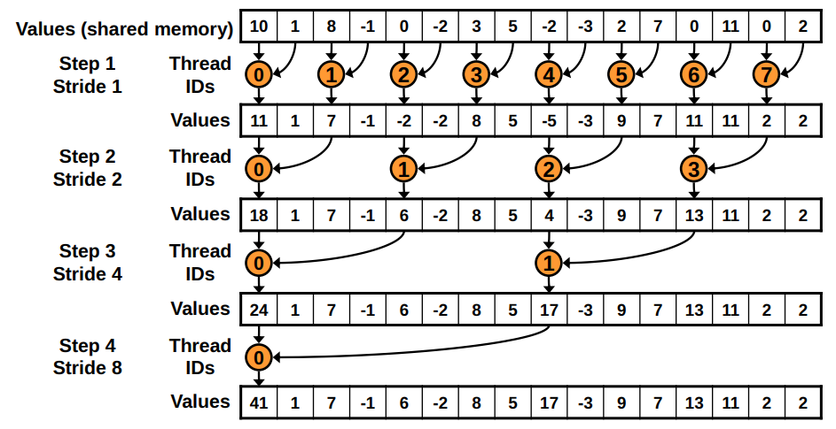
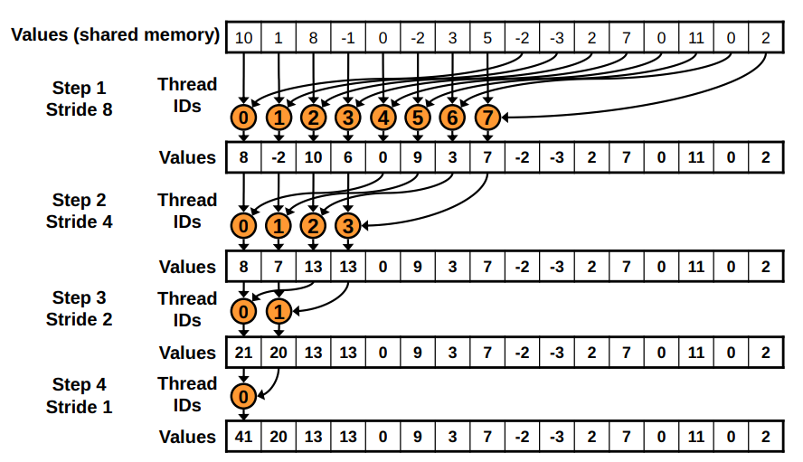

30) Parallel reductions with CUDA.jl#
Last time:
Memory management with CUDA.jl
Simple kernels using global memory
Simple kernels using shared/local memory
Instruction Level Parallelism
Bank Conflicts
Today:
Outline
Parallel reduction on the GPU
Parallel reduction complexity
Different strategies for optimization
1. Outline#
In this lecture, we will use an efficient parallel reduction on the GPU as an example to talk about:
communication across thread blocks
global synchronization problem across thread blocks
use of different memory pools for optimization strategies
Note
References:
We will losely follow Optimizing Parallel Reduction in CUDA by Mark Harris. Note that some of our kernels will be different than those given in the talk, but the ideas are (mostly) the same.
2. Parallel reduction on the GPU#
We want to perform a Parallel Reduction operation on an array of size \(N\).
This is a common and important data parallel primitive. It should be:
Easy to implement in CUDA
But often harder to get it right
We can use this as a great optimization example
Basic idea#
Tree-based approach used within each thread block

Need to be able to use multiple thread blocks
to process very large arrays
to keep all multiprocessors on the GPU busy
each thread block reduces a portion of the array
But how do we communicate partial results between thread blocks?
Problem: Global Synchronization#
If we could synchronize across all thread blocks, we could easily reduce very large arrays:
global sync after each block would produce its result
once all blocks reach sync, we would continue recursively
But CUDA has no global synchronization. Why?
It’s expensive to build in hardware for GPUs with high processor count
It would force programmers to run fewer blocks (no more than # multiprocessors \(\times\) # resident blocks / multiprocessor) to avoid deadlock, which may reduce overall efficiency
Solution: decompose into multiple kernels.
Kernel launch serves as a global synchronization point
Kernel launch has negligible hardware overhead and low software overhead
Solution: Kernel Decomposition#
We avoid global sync by decomposing the computation into multiple kernel invocations

In the case of reductions, the code for all levels is the same:
we have recursive kernel invocations
Measuring success: what are we striving for?#
We should strive to reach GPU peak performance
But we need to choose the right metric to measure success:
GFLOP/s: for compute-bound kernels
Bandwidth: for memory-bound kernels
Reductions have very low arithmetic intensity
1 flop per element loaded (bandwidth-optimal)
Therefore we are not compute-bound, hence we should strive for peak bandwidth
3. Parallel reduction complexity#
\(\log(N)\) parallel steps, each step \(S\) does \(N/2^S\) independent operations
Step complexity is \(O(\log N)\)
For \(N=2^D\) (we are sticking to power-of-2 block sizes), performs \(\Sigma_{S \in [1, \dots, D]} 2^{D-S} = N-1\) operations
Work complexity is \(O(N)\) - It is work-efficient, i.e., does not perform more operations than a sequential algorithm
With \(P\) threads physically in parallel (\(P\) processors), time complexity is \(O(\frac{N}{P} + \log N)\)
Compare to \(O(N)\) for sequential reduction
In a thread block, \(N=P\), so \(O(\log N)\)
4. Different strategies for optimization#
The code for the Julia GPU reduction can be found in julia_codes/module8-3/reduction.jl
Basic implementation idea:#
Version 1#
Because there is no global synchronization, we need to launch the kernel multiple times in thread blocks (work groups).
In each launch, each thread block will work together to reduce the set of numbers to a single summed value.
In the first iteration we launch, say,
num_groups(8 by default in the kernel below) work groups to reduce a vector of lengthNto a vector of lengthnum_groups.We will then recurse and reduce the vector of length
num_groupsto a smaller vector, and continue until we only have1element in the partially reduced vector.
"""
reduction_knl_v1(x, y; op=+, ldim::Val{LDIM}=Val(256))
Basic interleaved memory access version where each `LDIM` chunk of values from `x`
are reduced using `op` (+ by default) to single values which are stored in the first
`gridDim().x` values of `y`
Problems:
- Modulo is slow on the GPU >> Remove by calculating
- threads in a warp are divergent (for the if statement) >> shift threads as algorithm progresses
"""
function knl_reduction_v1!(y, x, N, op, ::Val{LDIM}) where LDIM
tid = threadIdx().x
bid = blockIdx().x
gid = tid + (bid - 1) * LDIM # global thread index
l_x = @cuStaticSharedMem(eltype(x), LDIM) # shared memory allocation
@inbounds begin
# set the local/shared memory array
if gid <= N
l_x[tid] = x[gid]
else
l_x[tid] = 0
end
sync_threads()
s = 1
while s < LDIM
# I'm still active if my thread ID (minus 1) is divisible by 2*s
if ((tid-1) % (2 * s) == 0)
# combine my value to my (interleaved/strided) neighbors value
l_x[tid] = op(l_x[tid], l_x[tid + s])
end
s *= 2
sync_threads()
end
# Thread 1 is the only remaining "real" thread which will carry the result
tid == 1 && (y[bid] = l_x[tid])
end
nothing
end
Problems:
Modulo (
%) is very slowHighly divergent warps are very inefficient. We have an if-statement for which, at the first step, half of the threads in a warp will be idleing; in subsequent steps, even more will be idleing

Version 2#
Work-group (block size) sized elements of the given array into shared memory (as in version 1)
Use binary sum to reduce the values to a single number (as in version 1)
Recurse until there is only one group (as in version 1)
BUT: replace divergent branch in inner loop, with strided index and non-divergent branch
"""
reduction_knl_v2(x, y; op=+, ldim::Val{LDIM}=Val(256))
Improved strided memory access version where each `LDIM` chunk of values from `x`
are reduced using `op` to single values which are stored in the first
`gridDim().x` values of `y`
Problems:
- Memory access is still strided, thus bank conflicts >> sequential access
"""
function knl_reduction_v2!(y, x, N, op, ::Val{LDIM}) where LDIM
tid = threadIdx().x
bid = blockIdx().x
gid = tid + (bid - 1) * LDIM
l_x = @cuStaticSharedMem(eltype(x), LDIM)
@inbounds begin
if gid <= N
l_x[tid] = x[gid]
else
l_x[tid] = 0
end
sync_threads()
s = 1
while s < LDIM
# figure out whether I'm in the active block
sid = 2 * (tid-1) * s + 1
if sid + s <= LDIM
# combine my value to my (strided) neighbors value
l_x[sid] = op(l_x[sid], l_x[sid+s])
end
s *= 2
sync_threads()
end
# Thread 1 is the only remaining "real" thread
tid == 1 && (y[bid] = l_x[tid])
end
nothing
end

Problem:
New Problem: Shared Memory Bank Conflicts
Version 3#
Use sequential addressing of main memory

This version with sequential addressing is conflict free (i.e., no bank conflicts)
We replace strided indexing in inner loop, with reversed loop and
threadID-based indexing
Problem
Half of the threads are idle on first loop iteration! This is wasteful
Version 4#
First add during load: Let each thread load
OVERLAPnumbers and add them together before switching to shared memory.
"""
reduction_knl_v4(x, y; op=+, ldim::Val{LDIM}=Val(256))
Add a few values before switching to shared memory with sequential memory
access version where each `LDIM` chunk of values from `x` are reduced using
`op` to single values which are stored in the first `gridDim().x` values of `y`
"""
function knl_reduction_v4!(y, x, N, op, ::Val{LDIM},
::Val{OVERLAP}) where {LDIM, OVERLAP}
tid = threadIdx().x
bid = blockIdx().x
gid = tid + (bid - 1) * LDIM
gsz = LDIM * gridDim().x # total number of threads
l_x = @cuStaticSharedMem(eltype(x), LDIM)
@inbounds begin
# Have each thread initially load and add OVERLAP values
p_x = zero(eltype(x))
for n = 1:OVERLAP
if gid + (n-1) * gsz <= N
p_x += x[gid + (n-1)*gsz]
end
end
l_x[tid] = p_x
sync_threads()
# bit right shift to divide by 2
s = LDIM >> 1
while s > 0
# I'm still active if my thread ID is less than
if tid <= s
# combine my value to my (strided) neighbors value
l_x[tid] = op(l_x[tid], l_x[tid + s])
end
s = s >> 1 # bit right shift to divide by 2 again
sync_threads()
end
# Thread 1 is the only remaining "real" thread
tid == 1 && (y[bid] = l_x[tid])
end
nothing
end